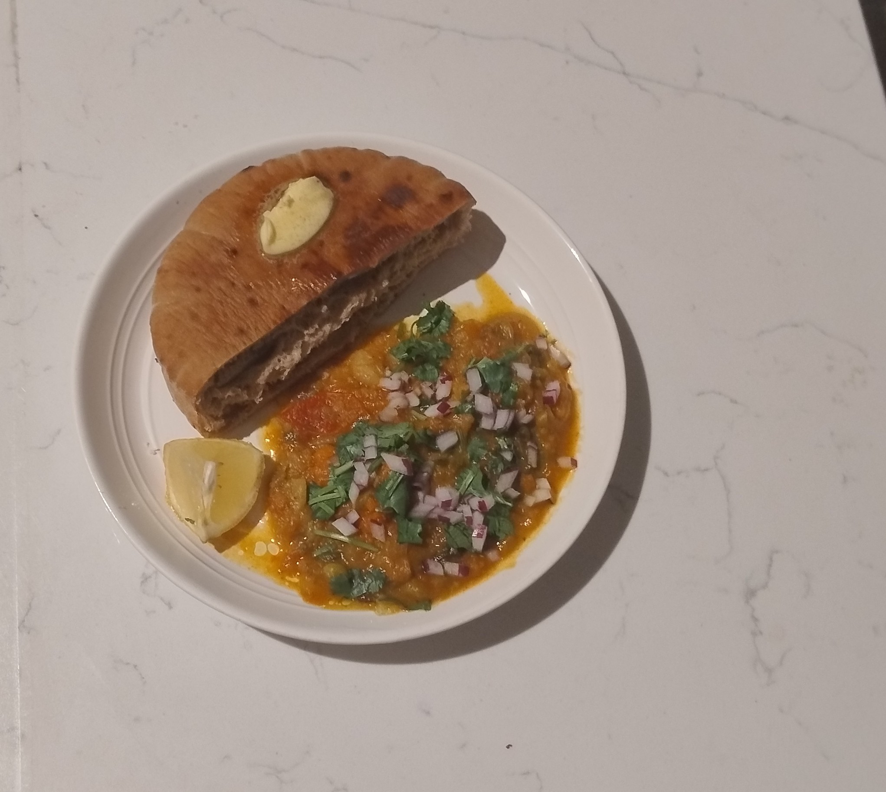

Pav Bhaji Recipe (indian bread + vegetable stew)

Such a cozy and easy way to get a LOT of veggies in!
Ingredients
Making the stew "Bhaji"
- A handful of greens of your choice (Spinach, Kale, Collard Greens)
- 1-2 Medium Sized Potatoes
- 1 Tomato
- 1 Tablespoon of Salt
- 2 Tablespoon of butter
- 1-2 Tsp of Red chili powder (to taste)
- 2 cups of boiling water
Preparing the bread "Pav"
- Toast the bread in the cast iron pan until golden (or you can use a toaster)
- Serve with the stew "bhaji"
Instructions
- In your boiling water, add all of your veggies.
- Add a pinch of salt to the veggies
- After the veggies are softened, then mash and add your chili powder and the rest of your salt.
- Add 1 Tablespoon of butter to make this cozy
- In a cast iron pan, add the rest of your butter and toast the bread buns into that.
- Assemble the curry and the bread buns